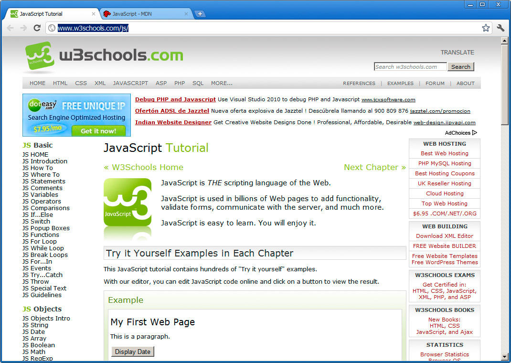
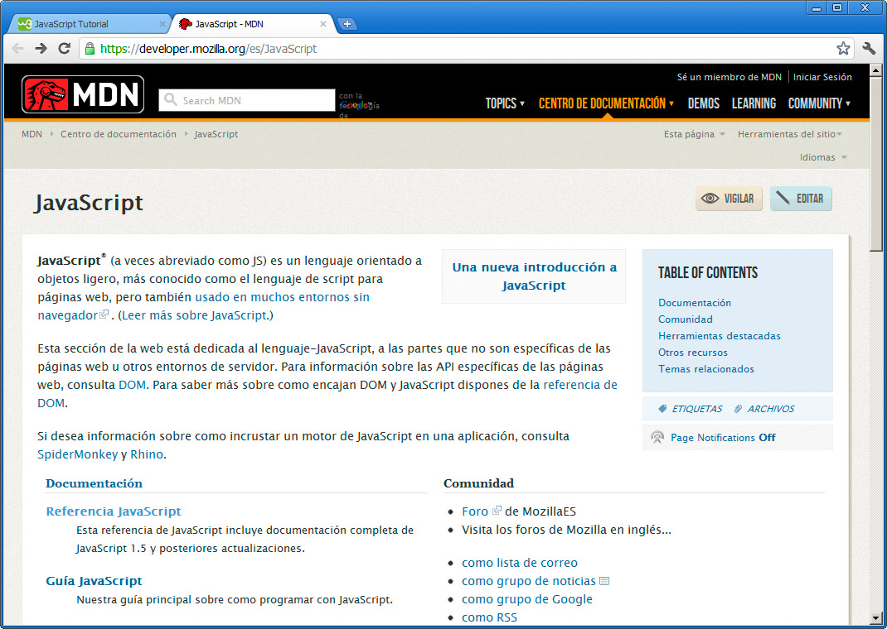
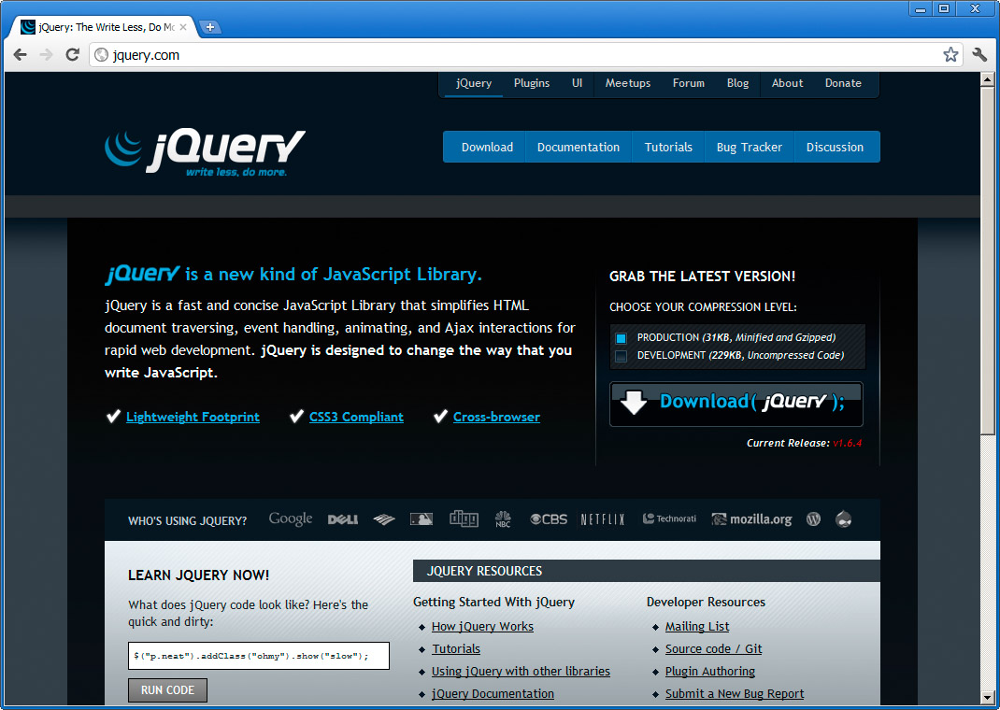

Volver al índice
Otras tecnologías
En estos últimos compases no vamos a profundizar más en las tecnologías que complementan a HTML y a las hojas de estilo para la creación de páginas web, pero nos gustaría facilitar algunas direcciones para que, quien lo desee, pueda asomarse a estas otras opciones de las que venimos hablando.
JavaScript
Si consideramos a HTML como los sustantivos de nuestra oración y a las hojas de estilo como los adjetivos, JavaScript sería nuestro verbo: la definición de la acción y de la interactividad en una página web.
JavaScript es un lenguaje de programación completo, basado en EMACScript, lo que supone que su sintaxis está muy cercana a otros lenguajes tan populares como Java o Actionscript de Flash.
Todos los navegadores actuales son capaces de ejecutar JavaScript, lo que lo convierte en el complemento ideal, ya que nos permite realizar labores complejas dentro del ordenador de nuestros usuarios, sin necesidad de montar una infraestructura compleja en el servidor. De hecho, una aplicación creada con JavaScript se podría ejecutar en navegador web sin tener ni siquiera acceso a Internet.
A traves de la interfaz DOM (Document Object Model, de la W3C), JavaScript es capaz de acceder a cualquier recurso situado en una página web para manipularlo de todas las formas imaginables. Cada etiqueta, cada bloque de contenido puede ser localizado en JavaScript mediante su identificador, su clase, su tipo de etiqueta, etc.
Es sencillo encontrar documentación sobre JavaScript en Internet pero, aun así, apuntaremos un par de sitios:
- Tutorial de JavaScript de w3schools (http://www.w3schools.com/js/ ). Este sitio web es un punto de referencia único para aprender tecnologías web. Eso sí, está escrito en inglés.

- Centro de documentación de Mozilla (https://developer.mozilla.org/es/JavaScript ). La fundación Mozilla nos brinda una excelente documentación, esta vez en español, sobre JavaScript, DOM y todo lo necesario para desarrollar nuestras páginas web.

Otras lecturas recomendadas
Al profundizar en JavaScript, veremos el mundo de posibilidades tan grande que se nos abre, pero también descubriremos que algunas operaciones son algo tediosas de realizar. Por este motivo encontraremos numerosas librerías predefinidas de funciones JavaScript, que nos permitirán ahorrar mucho tiempo de desarrollo. Entre todas ellas destaca notablemente JQuery:
- jQuery (http://jquery.com/ ) es una librería de funciones para acelerar nuestro desarrollo con JavaScript.

Al introducirnos en el mundo del diseño web, tampoco tardaremos mucho tiempo en oir hablar del uso de Ajax y de sus ventajas. Ajax es, en gran medida, el responsable tecnológico de lo que acontece en las páginas web modernas. Las técnicas que se engloban bajo la denominación de Ajax permiten realizar cargas de contenidos en las páginas en tiempo real y sin necesidad de volver a recargar la página web. Simplificando, Ajax nos permite que, al hacer clic en un enlace, no se cargue otra página nueva entera, sino que podamos recargar sólo una pequeña parte de la página o realizar cualquier otra operación.
Este cambio conlleva un comportamiento mucho más apropiado y rápido, convirtiendo una simple página web en una completa aplicación interactiva.
De nuevo podemos recurrir a w3schools para tener una visión general de estas técnicas.
- Tutorial de Ajax (http://www.w3schools.com/ajax/default.asp )
El lado del servidor
Para completar el funcionamiento de una página web, podemos emplear diferentes tecnologías en el servidor. Esto nos permite llegar a los extremos actuales, donde las páginas web no existen como archivos, sino que se generan cuando un usuario necesita información, mediante una combinación de lenguajes de programación dinámicos (PHP, Java, Python, etc.) y bases de datos (Oracle, MySQL, etc.). Por un lado se define la estructura de la página, se combina con HTML y CSS y por otro lado se toma el contenido de la base de datos. Todo eso se mezcla en una página web, que a su vez se remite al navegador de nuestros usuarios.
Por ello puede resultarnos útil conocer alguno de esos lenguajes de programación y así poder componer aplicaciones más complejas en el futuro. Queda mucho camino por recorrer, pero está plagado de grandes satisfacciones.
Pregunta Verdadero-Falso
Verdadero Falso